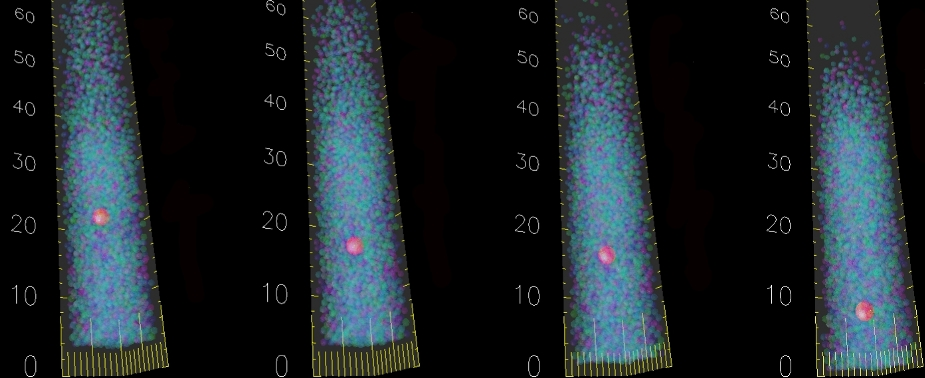
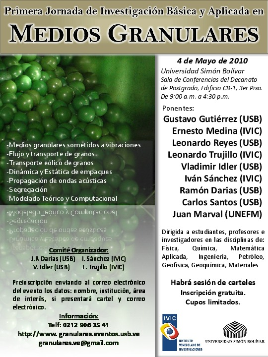
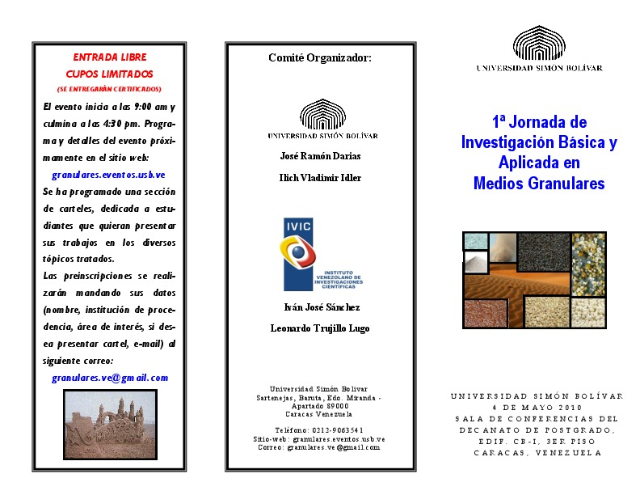
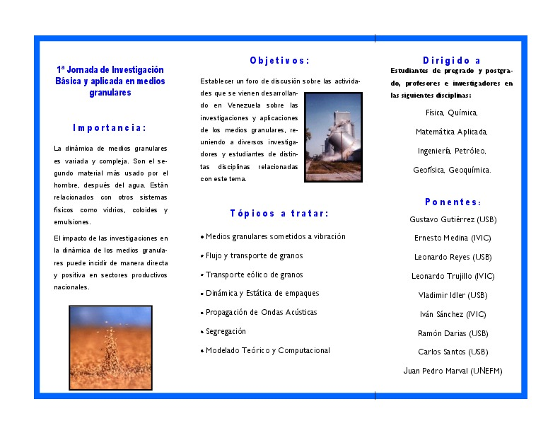

Ilich Vladimir Idler M.
Inicio
CV
Artículos
Galeria
English Version
Dr. Ilich Vladimir Idler Monagreda
Profesor del departamento de Física de la Universidad Simón Bolivar, Caracas, Venezuela.

1a Jornada de Investigación Básica y Aplicada en Medios Granulares, Mayo 2010.



Links Relacionados
vidler@usb.ve
Perfil en Google Scholar
Perfil en linkedin
Dep. Física
Universidad Simón Bolivar
Clases en la U.S.B.
Información adicional